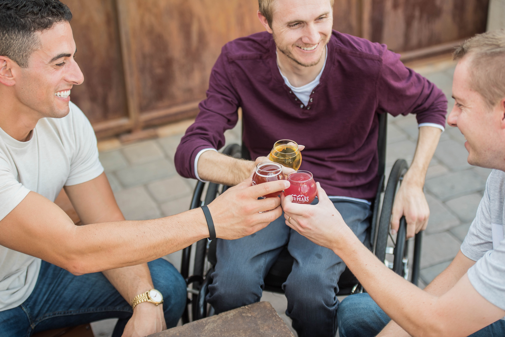

Mais uma etapa de superação e inclusão foi alcançada. A primeira fase do Circuito Paraskate Tour, inédito evento dedicado à skatistas com alguma deficiência, foi realizada nos dias 23 e 24 de outubro...
Tudo começou em um projeto escolar no 2° ano do ensino médio. Todos somos alunos do Senac Ensino Médio, na cidade de Caxias do Sul e em determinado momento, nos foi proposto a elaboração de um de um site visando a acessibilidade social. Neste projeto, os alunos teriam como objetivo, diversas tarefas e atividades que beneficiariam a sociedade em geral, especialmente, de pessoas com deficiência.
Através do site, iríamos trazer notícias, promover reportagens, vender produtos, tudo isso, dentro da área de acessibilidade. Isto é, os conteúdos que abordariamos iriam tratar de histórias de superação, projetos sociais, avanços tecnológicos, etc. Assim, surgiu o Projeto Accessum.
Visto tudo isso, nosso principal propósito é criar um ambiente agradável e integrador para todas as pessoas. Um local de acolhimento e auxílio, que ao mesmo tempo divulgue e dissemine este assunto tão importante.
